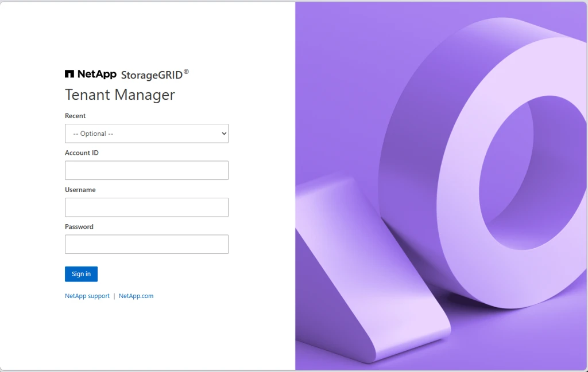
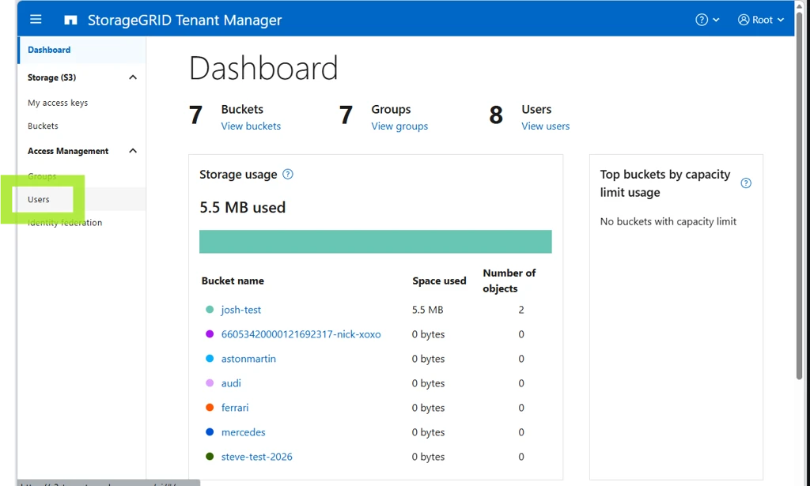
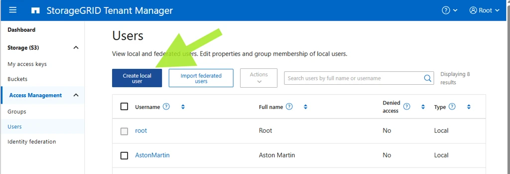
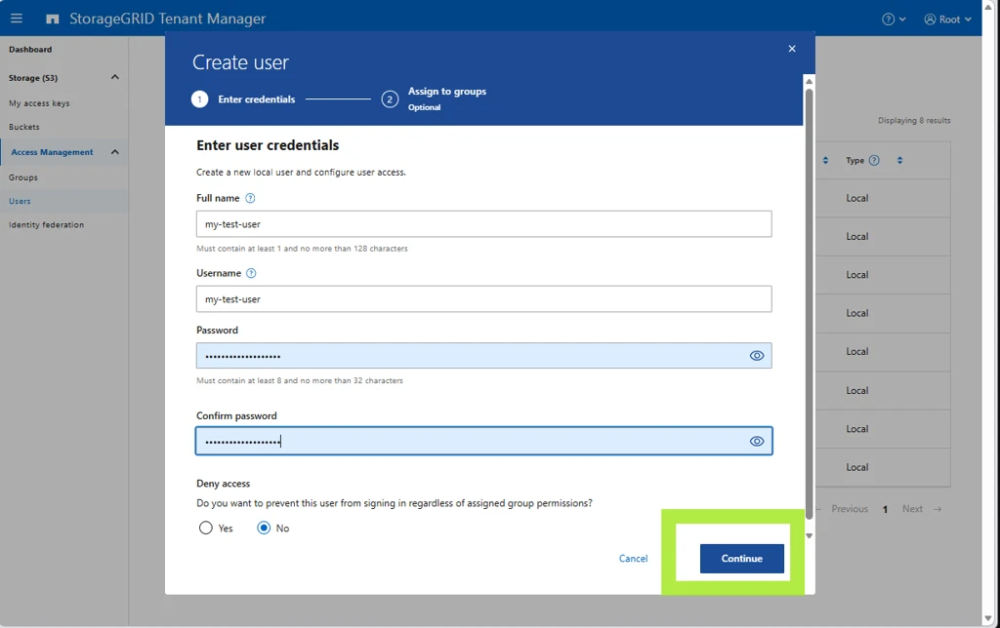
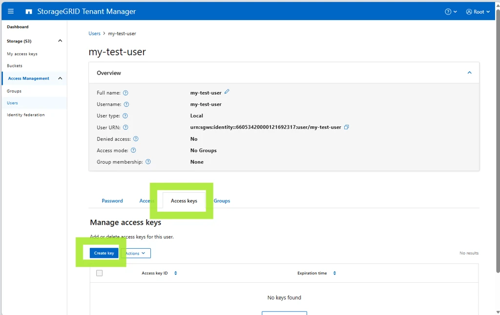
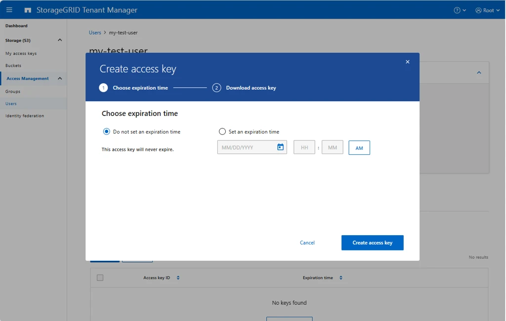
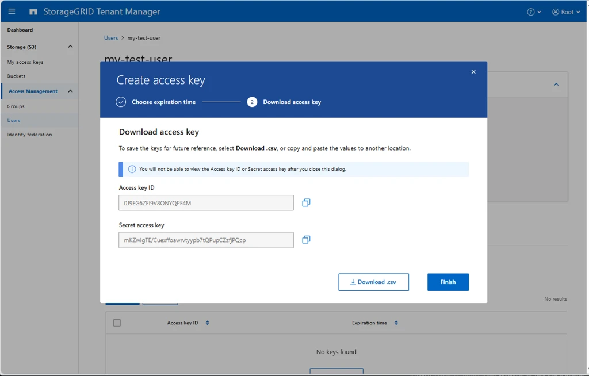
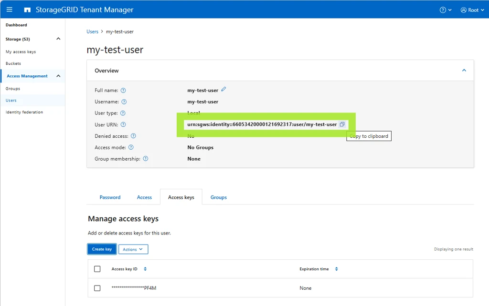
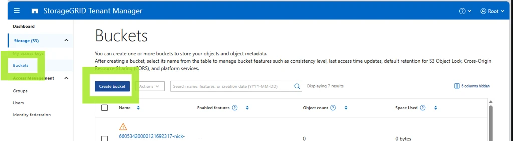
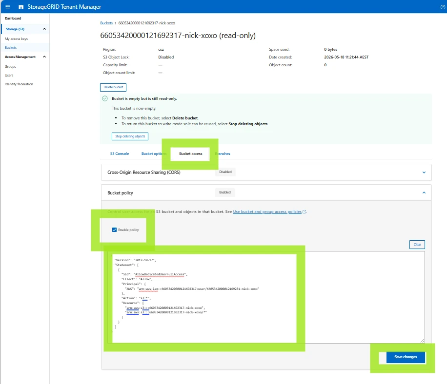

Limiting bucket access to specific access keys
Limiting bucket access to specific access keys¤
For the simplest use case, you can use your root or tenant-level access keys to access all buckets in your tenancy.
This page describes the scenario where you need specific keys to only have access to a specific bucket. You create a dedicated tenant user, generate access keys for that user, and attach a bucket policy that grants only that user access to the bucket.
Log in¤
Log in to the Tenant Manager at https://s3-tenant.aucyber.com.au/.
You will need your tenant ID and root access credentials as supplied by AUCyber. If you do not have these, please reach out to your Customer Success Manager for secure delivery.

Create a user¤
-
Navigate to Users.

-
Create a local user.


-
There is no need to add the user to any groups.
Create access keys for the user¤
-
On the user, create a set of S3 access keys.

-
Set an expiration time if desired. If this is possible, it is always recommended, to mitigate against future leaking of the key.

Info
Be sure to copy and store your secret key securely. It will not be available (even to AUCyber staff) after creation.

Create the policy¤
On the user screen, get the user's URN. You will put this into the bucket policy to ensure only this user can access the bucket.

In a text editor, copy the policy below and update it with:
- The Principal URN (in this example
urn:sgws:identity::66053420000121692317:user/my-test-user) - The bucket name in the
Resourcesection, in both lines (in this example66053420000121692317-nick-xoxo)
{
"Version": "2012-10-17",
"Statement": [
{
"Sid": "AllowDedicatedUserFullAccess",
"Effect": "Allow",
"Principal": {
"AWS": "urn:sgws:identity::66053420000121692317:user/my-test-user"
},
"Action": "s3:*",
"Resource": [
"arn:aws:s3:::66053420000121692317-nick-xoxo",
"arn:aws:s3:::66053420000121692317-nick-xoxo/*"
]
}
]
}
It is a redundancy to include the bucket name in the policy when the policy applies only to this specific bucket anyway, but it is best practice to prevent accidental misconfiguration.
Note
StorageGRID accepts either principal format - the StorageGRID-native form (urn:sgws:identity::<tenant-id>:user/<name>, used above) or the AWS-style form (arn:aws:iam::<tenant-id>:user/<name>, emitted by the PowerShell script below). Both are valid; use whichever you prefer, just be consistent.
Create the bucket¤
-
Create the bucket.

-
Set the policy you created above on the bucket and save.

Now you should be able to access this bucket (and this bucket only) with the access keys.
PowerShell script to do all this automatically¤
This PowerShell script will prompt for the tenant ID, root password and bucket name and do all of the above.
Warning
This code comes with no warranty nor implication of fitness for purpose, and it is the responsibility of users to check the code for correctness prior to running.
<#
.SYNOPSIS
Provision a NetApp StorageGRID S3 bucket with a dedicated tenant user,
access keys, and a bucket policy granting that user full access.
.DESCRIPTION
Idempotent. Safe to re-run; existing bucket/user are reused. Access keys
are always newly generated (StorageGRID does not return existing secrets).
Workflow:
1. Authenticate to the Tenant Management API as the tenant root user.
2. Create the bucket (if it doesn't exist).
3. Create a tenant S3 user named after the bucket (if it doesn't exist).
4. Generate a fresh S3 access key pair for that user.
5. Apply a bucket policy granting that user full s3:* on the bucket.
6. Print the access key / secret key.
.PARAMETER AdminEndpoint
FQDN of the StorageGRID Admin/Management endpoint.
Example: admin.storagegrid.example.com
.PARAMETER TenantId
20-digit numeric StorageGRID tenant account ID.
.PARAMETER Username
Tenant user used to authenticate. Defaults to "root".
.PARAMETER Password
Password for the tenant user. Plain string for convenience; switch to
SecureString if calling non-interactively from secret stores.
.PARAMETER BucketName
Single S3 bucket to create. Also used as the new tenant user name (lowercased).
.PARAMETER BucketNames
Comma-separated list of bucket names to create in bulk. Each bucket gets its
own dedicated tenant user (named after the bucket, lowercased) and key pair.
Mutually exclusive with -BucketName; if both are supplied, BucketNames wins.
.PARAMETER Region
S3 region for the bucket. Defaults to "us-east-1".
.PARAMETER SkipCertCheck
Skip TLS certificate validation. Use only for self-signed admin certs.
.EXAMPLE
.\New-StorageGridBucketWithUser.ps1 `
-AdminEndpoint admin.sg.example.com `
-TenantId 12345678901234567890 `
-Password 'changeme' `
-BucketName project-alpha `
-SkipCertCheck
.EXAMPLE
.\New-StorageGridBucketWithUser.ps1 `
-AdminEndpoint admin.sg.example.com `
-TenantId 12345678901234567890 `
-Password 'changeme' `
-BucketNames 'alpha,beta,gamma' `
-SkipCertCheck
#>
[CmdletBinding()]
param(
[string]$AdminEndpoint,
[string]$TenantId,
[string]$Username,
[string]$Password,
[string]$BucketName,
[string]$BucketNames,
[string]$Region,
[switch]$SkipCertCheck
)
$ErrorActionPreference = "Stop"
# ---------------------------------------------------------------------------
# Interactive prompts (with default hints)
# ---------------------------------------------------------------------------
function Read-WithDefault {
param(
[Parameter(Mandatory)][string]$Prompt,
[string]$Default,
[switch]$Secret,
[switch]$Required
)
while ($true) {
$label = if ($Default) { "$Prompt [$Default]" } else { $Prompt }
if ($Secret) {
$secure = Read-Host -Prompt $label -AsSecureString
$bstr = [System.Runtime.InteropServices.Marshal]::SecureStringToBSTR($secure)
try {
$value = [System.Runtime.InteropServices.Marshal]::PtrToStringBSTR($bstr)
} finally {
[System.Runtime.InteropServices.Marshal]::ZeroFreeBSTR($bstr)
}
} else {
$value = Read-Host -Prompt $label
}
if ([string]::IsNullOrWhiteSpace($value)) { $value = $Default }
if ($Required -and [string]::IsNullOrWhiteSpace($value)) {
Write-Host " value required" -ForegroundColor Yellow
continue
}
return $value
}
}
if ([string]::IsNullOrWhiteSpace($AdminEndpoint)) {
$AdminEndpoint = Read-WithDefault -Prompt "AdminEndpoint" -Default "s3-tenant.aucyber.com.au" -Required
}
if ([string]::IsNullOrWhiteSpace($TenantId)) {
$TenantId = Read-WithDefault -Prompt "TenantId" -Required
}
if ([string]::IsNullOrWhiteSpace($Username)) {
$Username = Read-WithDefault -Prompt "Username" -Default "root" -Required
}
if ([string]::IsNullOrWhiteSpace($Password)) {
$Password = Read-WithDefault -Prompt "Password" -Secret -Required
}
if ([string]::IsNullOrWhiteSpace($BucketNames) -and [string]::IsNullOrWhiteSpace($BucketName)) {
$BucketNames = Read-WithDefault -Prompt "BucketName(s) (comma-separated for bulk)" -Required
}
if ([string]::IsNullOrWhiteSpace($Region)) {
$Region = Read-WithDefault -Prompt "Region" -Default "csz" -Required
}
# Resolve the bucket list (BucketNames takes precedence)
if (-not [string]::IsNullOrWhiteSpace($BucketNames)) {
$BucketList = $BucketNames -split ',' |
ForEach-Object { $_.Trim() } |
Where-Object { $_ }
} else {
$BucketList = @($BucketName)
}
if ($BucketList.Count -eq 0) {
throw "No bucket names supplied."
}
# ---------------------------------------------------------------------------
# TLS / certificate handling
# ---------------------------------------------------------------------------
$invokeExtra = @{}
if ($SkipCertCheck) {
if ($PSVersionTable.PSVersion.Major -ge 6) {
$invokeExtra["SkipCertificateCheck"] = $true
} else {
# PS 5.1 fallback: globally trust all certs for this session
if (-not ("TrustAllCertsPolicy" -as [type])) {
Add-Type @"
using System.Net;
using System.Security.Cryptography.X509Certificates;
public class TrustAllCertsPolicy : ICertificatePolicy {
public bool CheckValidationResult(ServicePoint sp, X509Certificate cert,
WebRequest req, int prob) { return true; }
}
"@
}
[System.Net.ServicePointManager]::CertificatePolicy = New-Object TrustAllCertsPolicy
[System.Net.ServicePointManager]::SecurityProtocol = `
[System.Net.SecurityProtocolType]::Tls12
}
}
$BaseUri = "https://$AdminEndpoint/api/v3"
# ---------------------------------------------------------------------------
# Authenticate
# ---------------------------------------------------------------------------
Write-Host "[*] Authenticating to $AdminEndpoint (tenant=$TenantId, user=$Username)"
$authBody = @{
accountId = $TenantId
username = $Username
password = $Password
cookie = $false
csrfToken = $false
} | ConvertTo-Json
$authResp = Invoke-RestMethod -Method Post `
-Uri "$BaseUri/authorize" `
-Body $authBody `
-ContentType "application/json" `
@invokeExtra
$Token = $authResp.data
$Headers = @{ Authorization = "Bearer $Token" }
# ---------------------------------------------------------------------------
# Helper for authenticated API calls
# ---------------------------------------------------------------------------
function Invoke-SgApi {
param(
[Parameter(Mandatory)][string]$Method,
[Parameter(Mandatory)][string]$Path,
$Body = $null
)
$params = @{
Method = $Method
Uri = "$BaseUri$Path"
Headers = $Headers
ContentType = "application/json"
}
foreach ($k in $invokeExtra.Keys) { $params[$k] = $invokeExtra[$k] }
if ($null -ne $Body) {
$params["Body"] = ($Body | ConvertTo-Json -Depth 20 -Compress)
}
try {
return Invoke-RestMethod @params
} catch {
$msg = $_.Exception.Message
if ($_.ErrorDetails -and $_.ErrorDetails.Message) {
$msg += " | $($_.ErrorDetails.Message)"
}
throw "API $Method $Path failed: $msg"
}
}
# ---------------------------------------------------------------------------
# Cache the user list once; we'll refresh after creating new users.
# ---------------------------------------------------------------------------
$usersCache = Invoke-SgApi -Method GET -Path "/org/users?limit=1000"
$Results = New-Object System.Collections.Generic.List[object]
foreach ($RawBucket in $BucketList) {
# StorageGRID/S3 requires bucket names to match [a-z0-9-.]; lowercase to comply.
$Bucket = $RawBucket.ToLowerInvariant()
$NewUserShort = $Bucket
$NewUserUnique = "user/$NewUserShort"
if ($Bucket -ne $RawBucket) {
Write-Host " note: '$RawBucket' lowercased to '$Bucket' for S3 compliance"
}
Write-Host ""
Write-Host "=== Processing bucket '$Bucket' (user '$NewUserShort') ==="
# -----------------------------------------------------------------------
# 1. Bucket (idempotent)
# -----------------------------------------------------------------------
Write-Host "[*] Ensuring bucket '$Bucket' exists"
$buckets = Invoke-SgApi -Method GET -Path "/org/containers"
$bucketExists = $false
if ($buckets.data) {
$bucketExists = @($buckets.data | Where-Object { $_.name -eq $Bucket }).Count -gt 0
}
if ($bucketExists) {
Write-Host " bucket already exists"
} else {
Invoke-SgApi -Method POST -Path "/org/containers" `
-Body @{ name = $Bucket; region = $Region } | Out-Null
Write-Host " bucket created"
}
# -----------------------------------------------------------------------
# 2. Tenant user (idempotent)
# -----------------------------------------------------------------------
Write-Host "[*] Ensuring tenant user '$NewUserShort' exists"
$existingUser = $null
if ($usersCache.data) {
$existingUser = $usersCache.data | Where-Object { $_.uniqueName -eq $NewUserUnique } | Select-Object -First 1
}
if ($existingUser) {
$UserId = $existingUser.id
Write-Host " user already exists (id=$UserId)"
} else {
$createResp = Invoke-SgApi -Method POST -Path "/org/users" -Body @{
fullName = $NewUserShort
uniqueName = $NewUserUnique
memberOf = @()
disable = $false
}
$UserId = $createResp.data.id
Write-Host " user created (id=$UserId)"
}
# -----------------------------------------------------------------------
# 3. Generate S3 access keys (always issues a new pair)
# -----------------------------------------------------------------------
Write-Host "[*] Generating S3 access keys for $NewUserShort"
$keyResp = Invoke-SgApi -Method POST `
-Path "/org/users/$UserId/s3-access-keys" `
-Body @{ expires = $null }
$AccessKey = $keyResp.data.accessKey
$SecretKey = $keyResp.data.secretAccessKey
if (-not $AccessKey -or -not $SecretKey) {
throw "Did not receive access key / secret key from StorageGRID for $NewUserShort."
}
# -----------------------------------------------------------------------
# 4. Bucket policy
# -----------------------------------------------------------------------
Write-Host "[*] Applying bucket policy"
$policyObj = [ordered]@{
Version = "2012-10-17"
Statement = @(
[ordered]@{
Sid = "AllowDedicatedUserFullAccess"
Effect = "Allow"
Principal = @{ AWS = "arn:aws:iam::${TenantId}:user/$NewUserShort" }
Action = "s3:*"
Resource = @(
"arn:aws:s3:::$Bucket",
"arn:aws:s3:::$Bucket/*"
)
}
)
}
Invoke-SgApi -Method PUT `
-Path "/org/containers/$Bucket/policy" `
-Body @{ policy = $policyObj } | Out-Null
Write-Host " policy applied"
$Results.Add([pscustomobject]@{
Bucket = $Bucket
Username = $NewUserShort
UserId = $UserId
AccessKey = $AccessKey
SecretKey = $SecretKey
})
}
# ---------------------------------------------------------------------------
# Output
# ---------------------------------------------------------------------------
Write-Host ""
Write-Host "============================================================"
Write-Host " Admin endpoint : $AdminEndpoint"
Write-Host " Tenant ID : $TenantId"
Write-Host " Region : $Region"
Write-Host " Buckets : $($Results.Count)"
Write-Host "============================================================"
Write-Host ""
$Results | Format-Table Bucket, Username, AccessKey, SecretKey -AutoSize -Wrap | Out-Host
Write-Host ""
Write-Host "Capture the secret keys now. StorageGRID will not return them again."
# Emit the result objects to the pipeline so they can be captured / exported.
$Results
Example run:
PS C:\Users\NickDoyle\ws\s3> Get-Content .\s3.ps1 -Raw | Invoke-Expression
AdminEndpoint [s3-tenant.aucyber.com.au]:
TenantId: 66053420000121692317
Username [root]:
Password: ***************
BucketName: 66053420000121692317-nick-xoxo
Region [csz]:
[*] Authenticating to s3-tenant.aucyber.com.au (tenant=66053420000121692317, user=root)
[*] Ensuring bucket '66053420000121692317-nick-xoxo' exists
bucket created
[*] Ensuring tenant user '66053420000121692317-nick-xoxo' exists
user created (id=90c59fa5-8d93-4add-a730-f7f7882e887a)
[*] Generating S3 access keys for 66053420000121692317-nick-xoxo
[*] Applying bucket policy
policy applied
============================================================
Admin endpoint : s3-tenant.aucyber.com.au
Tenant ID : 66053420000121692317
Bucket : 66053420000121692317-nick-xoxo (region=csz)
S3 User : 66053420000121692317-nick-xoxo (id=90c59fa5-8d93-4add-a730-f7f7882e887a)
Access Key ID : xxx
Secret Key : yyy
============================================================
Capture the secret key now. StorageGRID will not return it again.